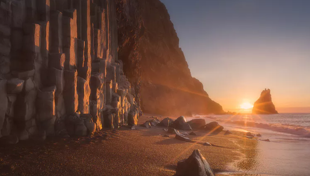
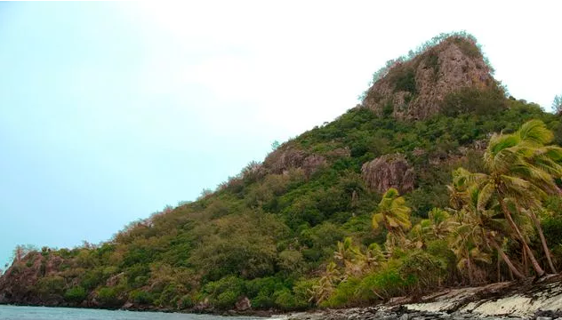
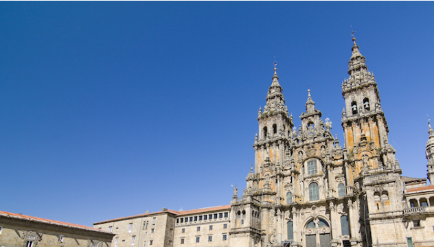
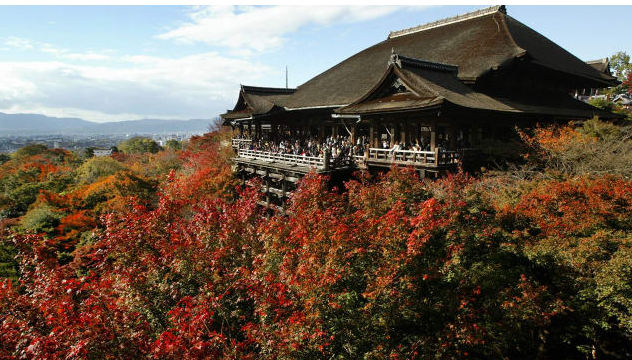
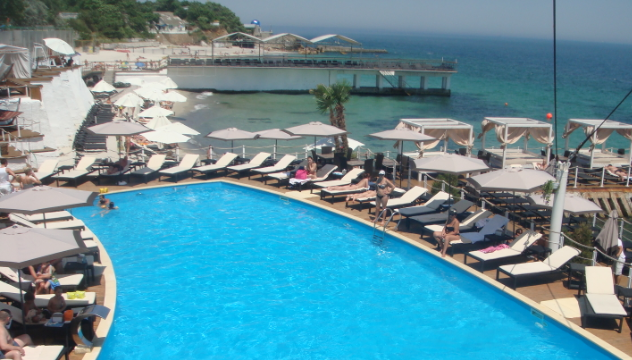

What I'll check out when I'm there!
- Iceland: The Volcano Hekla, Reynisfjara Beach, Blue Lagoon, and Lake Myvatn Geothermal Area.

- Fiji: Sample the Culture in Nadi, see fire-walking on Beqa, drink kava on Vanua Levu, and try to find pearls in Savusavu.

- Spain: Praza do Obradoiro, Toledo, the city of three cultures, medieval streets of Cordoba, and San Sebastia, beautiful seaside city.

- Japan: Ancient Kyoto for its imperial history, temples and shrines, Kumano Kodomonks for its trails through forests, and amazing Nagasaki for its resilience.

- Ukraine: Kyiv for its art and architecture and Odessa for it's sunlit beaches and pastel buildings.
